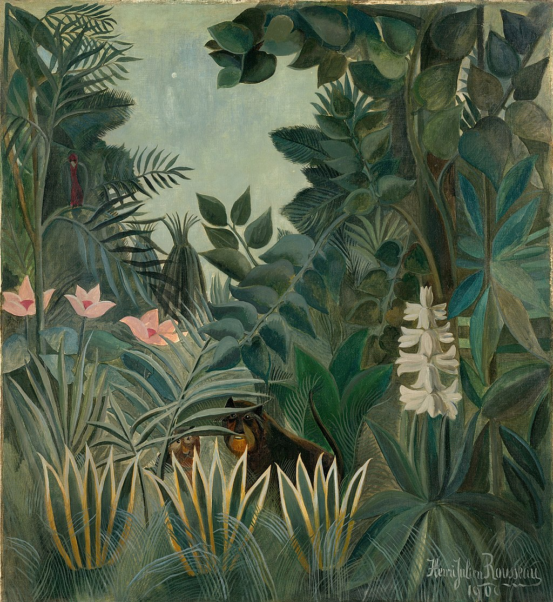

<head>
<meta charset="UTF-8" />
<meta name="keywords" content="drawing, painting" />
<meta name="description" content="drawings by Sunjy" />
<title>Sunjy</title>
<link rel="shortcut icon" type="image/x-icon" href="../../mImages/mCommon/favicon.ico" media="screen" />
<link rel="stylesheet" type="text/css" href="../../mCsses/mCommon/mCssA.css" />
<link rel="stylesheet" type="text/css" href="../../mCsses/mCommon/mCssB.css" />
<link rel="stylesheet" type="text/css" href="../../mCsses/mCommon/mCssC.css" />
<link rel="stylesheet" type="text/css" href="../../mCsses/mCommon/mCssD.css" />
<link rel="stylesheet" type="text/css" href="../../mCsses/mContent/mCssA.css" />
<link rel="stylesheet" type="text/css" href="../../mCsses/mContent/mCssB.css" />
<link rel="stylesheet" type="text/css" href="../../mCsses/mContent/mCssC.css" />
<link rel="stylesheet" type="text/css" href="../../mCsses/mContent/mCssD.css" />
</head>
<script type="text/javascript" src="../../mScripts/mContent/mContentAA.js" /></script>
<script type="text/javascript" src="../../mScripts/mContent/mContentAB.js" /></script>
<script type="text/javascript" src="../../mScripts/mContent/mContentAC.js" /></script>
<script type="text/javascript" src="../../mScripts/mContent/mContentAD.js" /></script>
<script type="text/javascript"></script> 
<script type="text/javascript">
document.write('<div class="mImgAbsolute"></div>');
/*
document.write('<p class="mFontSizeBColor" />From a white paper...</p>');
document.write('<table class="center"><tr><td>');
document.write('');
document.write('</td></tr></table>');
*/
</script>


<script type="text/javascript">
document.write('<p class="mFontSizeBColor" />The Equatorial Jungle</p>');
document.write('<p class="mFontSizeSColor" />“The Equatorial Jungle” by Henri Rousseau was ridiculed during much of his life as a naïve painting. Rousseau’s technique included the use of controlled brush strokes, which made each object in the painting appear outlined.<br><br>Eventually, with the endorsement of Picasso, Matisse, and other artists, Rousseau gained the recognition he craved. Today he is known a self-taught genius famous for his imaginary jungle scenes.<br><br>Primitivism is a mode of aesthetic idealization that aspires to recreate the “primitive” experience.<br><br>Henri Rousseau created several paintings of the jungle scenes that can be classed as Primitivism Art while working in a style that is also called Naïve Art.<br><br>Naïve Art is created by an artist who lacks formal education and training in art history, technique, and perspective.<br></p>');
document.write('<table class="center" /><tr><td>');
document.write('<br>Eventually, with the endorsement of Picasso, Matisse, and other artists, Rousseau gained the recognition he craved. Today he is known a self-taught genius famous for his imaginary jungle scenes.<br><br>Primitivism is a mode of aesthetic idealization that aspires to recreate the “primitive” experience.<br><br>Henri Rousseau created several paintings of the jungle scenes that can be classed as Primitivism Art while working in a style that is also called Naïve Art.<br><br>Naïve Art is created by an artist who lacks formal education and training in art history, technique, and perspective.<br>" />');
document.write('</td></tr></table>');
</script>


